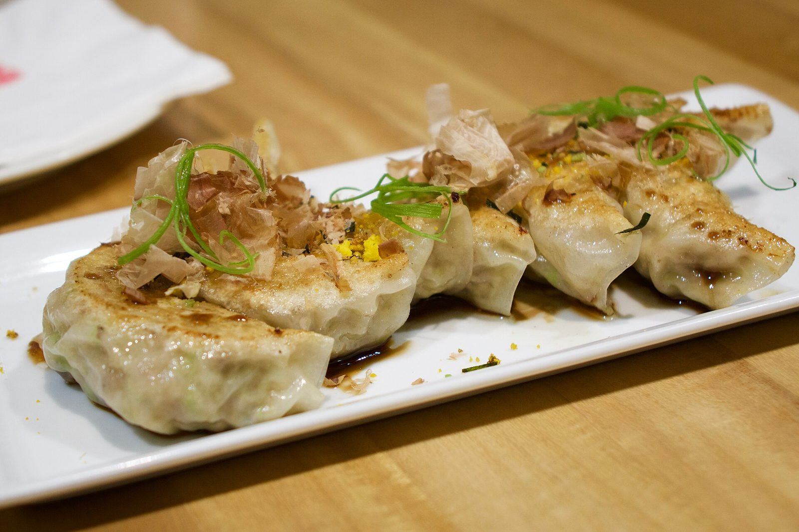

Giorno 13 di 15 · Martedì 15 dicembre · Tokyo
Boro-ichi, Ikebukuro e le luci di Ginza
📌 In sintesi
- Mattina Boro-ichi a Setagaya: 700 banchi di usato, quattro giorni all'anno.
- Pomeriggio Pokémon Center, Animate flagship e Otome Road.
- Sera Ginza e Marunouchi, le illuminazioni di Natale.
🕘 Itinerario della giornata
- 09:00Shinjuku → Setagaya — Keio da Shinjuku fino a Shimotakaido (15 minuti), poi il tram della Setagaya Line, due vagoni verdi che attraversano i quartieri residenziali, fino alla fermata Setagaya. Mezz'ora scarsa in tutto, e già il tram da solo è un pezzo di Tokyo che i turisti non vedono mai.
- 09:45Setagaya Boro-ichi solo oggi e domani, poi più — il mercato si tiene il 15 e il 16 dicembre e il 15 e 16 gennaio, e basta: quattro giorni all'anno, e voi ci capitate dentro. Nasce nel 1578, quando Hojo Ujimasa aprì qui un mercato franco, e si chiamava boro (stracci) perché si vendevano scampoli e roba smessa: quattrocentocinquant'anni dopo si vende ancora usato, ma anche antiquariato, ceramiche, utensili, ferraglia, kimono e cianfrusaglie. Settecento banchi lungo la Boroichi-dori, duecentomila persone in due giorni, ed è registrato come bene culturale folklorico immateriale della città. Portate contanti: quasi nessuno prende carte e i bancomat dei konbini qui intorno vanno in coda. Si scende alla fermata Setagaya, si percorre tutta la via e si risale sul tram a Kamimachi, dall'altro capo.
- 11:00Daikan Yashiki e il daikan mochi — a metà strada c'è la Setagaya Daikan Yashiki, la casa del magistrato di epoca Edo col tetto di paglia, che è il motivo per cui il mercato sta qui. Fuori vendono il daikan mochi, il dolce ufficiale del Boro-ichi: tre versioni, con anko, con kinako o con daikon grattugiato. Fila lunga, ma è l'unica cosa che si mangia solo in questi quattro giorni.
- 11:45Setagaya → Ikebukuro — a ritroso fino a Shinjuku e poi Fukutoshin, circa 45 minuti. È l'unico spostamento lungo della giornata ed è il prezzo del mercato.
- 12:45Pranzo a Ikebukuro est.
- 13:45Pokémon Center Mega Tokyo — dentro Sunshine City, il più grande del Giappone, con la statua gigante all'ingresso, il Pikachu Sweets Café e merchandise esclusivo dello store. Accanto c'è il Pokémon Card Gym, dove si gioca davvero. L'acquario nello stesso complesso lo saltate, non vi interessa; l'osservatorio pure, ma per un motivo diverso — costa un biglietto e stasera, alla Tokyo Station, avete la terrazza del KITTE che è gratis e più bella.
- 14:30Animate Ikebukuro — il flagship della più grande catena di anime e manga del Giappone: nove piani, riaperto nel 2023 in un edificio nuovo con un teatro e un café. È il tempio della cultura anime a Tokyo.
- 15:15Otome Road e i Mandarake di Ikebukuro — duecento metri di negozi rivolti al pubblico femminile otaku: dojinshi, merchandise josei, tre Mandarake dedicati e un Surugaya grande. Anche se il target non è il vostro, i piani dell'usato hanno figure e manga come altrove — e con molta meno concorrenza addosso rispetto ad Akihabara.
- 16:00Ikebukuro → Ginza — metro Marunouchi diretta, ~18 minuti.
- 16:45Ginza — il quartiere del lusso, e a dicembre le facciate dei grandi magazzini sono vetrine natalizie a tutta altezza. Da vedere il Ginza Six (con l'installazione artistica nell'atrio e il roof garden) e il Wako con la torre dell'orologio del 1932.
- 17:30Marunouchi Naka-dori — quindici minuti a piedi verso la Stazione di Tokyo. Il viale è illuminato da oltre un milione di luci color champagne da metà novembre a metà febbraio: è la più elegante delle illuminazioni di Tokyo e si cammina in mezzo agli alberi accesi per un chilometro.
- 18:15Facciata della Tokyo Station — l'edificio in mattoni rossi del 1914, restaurato, illuminato di notte e visto dalla piazza KITTE. Sul tetto del KITTE (sesto piano, gratuito) c'è una terrazza con la vista dall'alto sui binari e sulla stazione accesa.
- 19:15Cena a Marunouchi o a Yurakucho, sotto i binari.
- 21:00Rientro — dalla Tokyo Station la Marunouchi vi porta diretti a Shinjuku-sanchome, poi una fermata di Fukutoshin e siete a Higashi-Shinjuku. Un solo cambio, ~25 minuti.
🗺️ La mappa del giro
🍜 Dove mangiare

- PranzoIkebukuro è la capitale dei gyoza: Kaikatei è lo storico della zona, ravioli alla piastra con la base croccante, a piatti da sei. In alternativa il ramen tonkotsu di Mutekiya, con la fila d'ordinanza.
- Cenai gado-shita di Yurakucho — izakaya ricavati sotto gli archi della ferrovia: grigliate, birra e i treni che passano sopra la testa, a cento metri dalle boutique più care del Giappone.
💡 Note e dritte
La logica della giornata: tre blocchi, e il primo è l'unico della giornata che non si può spostare. Il Boro-ichi esiste il 15 e il 16 dicembre e poi sparisce per un mese: o stamattina o mai. Dopo si torna al programma normale — il polo otaku di Ikebukuro nel pomeriggio, e la sera il Giappone opposto, il lusso di Ginza e le illuminazioni. La sera è pensata così perché le luci di dicembre vanno viste: siete in Giappone nell'unico periodo dell'anno in cui esistono, e questo itinerario altrimenti non le toccherebbe mai.
Il Boro-ichi vale la sveglia e i tre quarti d'ora di treni? Sì, ma sapendo cosa non è. Non è un mercato dell'antiquariato di lusso e non è Nakano: è una fiera di paese dentro Tokyo, con banchi di roba vecchia, ferraglia, vestiti usati, cibo da strada e una folla lentissima. Ci si va per l'atmosfera e per il colpo di fortuna, non con una lista. Se dopo un'ora ne avete abbastanza, risalite sul tram e guadagnate un'ora a Ikebukuro: la giornata regge lo stesso. Aprono alle 9:00 e vanno avanti fino alle 20:00, ma il grosso dei banchi smonta nel tardo pomeriggio, e la mattina è l'ora in cui si cammina.
Due versioni della mattina, si decide a colazione. Piano A: sveglia normale, tram e Boro-ichi, e Ikebukuro comincia alle 12:45 — la giornata funziona ma è piena, e prima delle 13:00 avete già fatto tre treni. Piano B: si dorme, si parte alle 10:00 con sei minuti di Fukutoshin e Ikebukuro ve la fate con calma dalla mattina — Pokémon Center senza fretta, pranzo lento, Animate e Otome Road con due ore invece di una e mezza, e a Ginza ci arrivate riposati. Il piano B è la giornata come era pensata, ed è la scelta giusta se vi svegliate stanchi: siete a metà del secondo blocco di sette giorni e il conto della stanchezza arriva qui. Il Boro-ichi torna anche domani (16 dicembre), ma domani c'è Toyosu all'alba, quindi in pratica o stamattina o niente.
Le illuminazioni di dicembre, in ordine di bellezza: Marunouchi Naka-dori (un milione di luci champagne, la più elegante), Roppongi Keyakizaka (luci blu con la Tokyo Tower incorniciata in fondo alla strada — la foto più famosa), Caretta Shiodome (uno spettacolo di luci e musica ogni 20 minuti), Yebisu Garden Place (con un lampadario Baccarat da 5 metri in piazza). Se stasera avete energia, Roppongi è a otto minuti di metro da Ginza — e da Roppongi la Oedo vi riporta diretti a Higashi-Shinjuku, sotto l'hotel, senza cambi.
Natale in Giappone è una festa laica e romantica, non familiare: si esce in coppia, si guardano le luci e si mangia il Christmas cake (pan di Spagna con panna e fragole). Il 25 dicembre è un giorno lavorativo normale. Voi rientrate prima, ma le luci ci sono già tutte da metà novembre.
Se oggi non gira. Mattina no, pomeriggio sì Il Boro-ichi è stamattina o mai: torna il 16, ma il 16 avete Toyosu all'alba. Ikebukuro nel pomeriggio invece è interamente sacrificabile ed è il secondo miglior pomeriggio da liberare del viaggio. Una raccomandazione: la stanchezza del secondo blocco di sette giorni arriva proprio oggi, quindi se dovete mollare qualcosa mollate il pomeriggio, non il mercato.